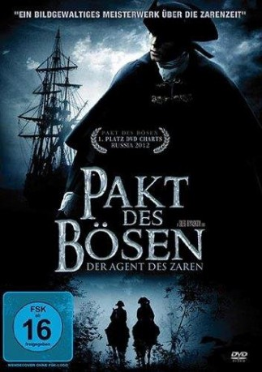

#5125 Pakt des Bösen 1 - Der Agent des Zaren
Alternativ: Zapiski ekspeditora Taynoy kantselyarii
 
 IMDB-Wertung: 6.3 / 10
IMDB-Wertung: 6.3 / 10  Metascore: 0
Metascore: 0 
Es sind die dunklen Zeiten um 1720 in Russland. Zar Peter der Große stirbt und sein hoch geschätzter Partner und Freund Prinz Menshikov herrscht von nun an über das Land. Doch es gibt auch diejenigen, die sich dem Prinzen entgegensetzen. Bote Ivan, ein Armeeoffizier, scheitert bei einer der riskanten Widerstandsbefehle, die ihm von der intriganten Opposition erteilt wurden und bekennt sich offen dazu. Er soll gnadenlos bestraft werden, doch der Chef des Geheimdienstes erkennt die Offiziersqualitäten, und von nun an wird Ivan ein Agent des Zaren. Damit beginnt eine Reihe von mysteriösen Vorfällen und er beginnt diesen nachzugehen. Maurer, Piraten und Großherzöge, alle haben ihre dunklen Geheimnisse…
Jahr: 2010
Dauer: 137 Minuten
FSK: 16
Land: Russland Studio: Ascot Elite Home EntertainmentTonspuren: DTS - ,
Untertitel:
Auflösung: 1080p (1920x1080) Größe: 11571 MB
Genre: Abenteuer, Geschichte
Regisseur: Oleg Ryaskov, Natalya Maslova
Drehbuch: Adam 'Tex' Davis
Soundtrack:
Darsteller:
- Sergey Chonishvili als Ushakov
- Darya Melnikova als Fekla
- Dmitriy Miller als Hanter
- Yekaterina Rednikova als Vdova
- Anastasiya Gorkova als Liza
- Sergey Neudachin als Egor
- Ilya Sokolovskiy als Samoylov
- Maksim Dakhnenko als Van Guver
- Pyotr Krasilov als Plahov
- Anna Snatkina als Voroncova
- Andrey Ryklin als Ben
- Anna Nosatova als Mari
- Mikhail Politseymako als Anorwill
- Ekaterina Yudina als Ann
- Elena Burlakova als Varvara
- Natalya Chernyavskaya als Staff
- Andrey Chubchenko als Doctor
- Yakov Efimov als Pirat
- Oksana Erdley als Freylina
- Marina Mogilevskaya als Macheha
- Andrey Natotsinskiy als Petr II
- Sergey Nosulenko als
- Aleksandra Popova als Freylina
- Darya Semenova als Douther
- Yuliya Shifershteyn als Glasha
- Anna Starshenbaum als Girl
- Yuriy Vasilev als Angliyskiy posol
- Andrey Kharybin als Hotel owner
Datei: X:\2-Dilogie(N-Z)\Pakt des Bösen\Pakt des Bösen 1 - Der Agent des Zaren (2010, FSK16, 1920x1080).mkv seit 23.12.2016
Festplatte: HD Collection-2(A-Z)-3(A-M)
 Alle Filme aus Gruppe '2-Dilogie(N-Z)\Pakt des Bösen'
Alle Filme aus Gruppe '2-Dilogie(N-Z)\Pakt des Bösen'